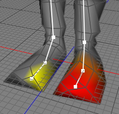

バーテックスウェイトツール
スケルトンタグとメッシュを関連づけすると、Cheetah3Dは自動でバーテックスウェイトの設定を各ジョイントに対して行います。しかし、バーテックスウェイトは常に完璧に設定されるわけでありません。その際はマニュアルで微調整する必要があります。
たとえば、Cheetah3Dは下図のように左足のつま先のジョイントへバーテックスウェイトの設定をしているのですが右足のつま先の一部についてもバーテックスウェイトを付与してしまいます。この状態で左足を動かすと右足も動き意図しない動作をしてしまいます。 バーテックスウェイトの間違った設定を修正する事が次の作業です。

モード
このツールは全てのモードで動作します。


メニューから"ツール キャラクターツールバーテックスウェイト"を選択しバーテックスウェイトツールを使用します。バーテックスウェイトツールはツール プロパティに表示されます。バーテックスウェイトの調整は、調整するジョイントをスケルトンタグのジョイント一覧から選択します。一度ジョイントが選択されるとウエイトが1の場合は赤色で表示され、ウエイトの値が小さくなるほど黄色になります。ウエイトの値が0になると灰色の表示になります。ウエイトの調整は3D ビュー画面内でマウスでペイントするようにして行います。
キャラクターツールバーテックスウェイト"を選択しバーテックスウェイトツールを使用します。バーテックスウェイトツールはツール プロパティに表示されます。バーテックスウェイトの調整は、調整するジョイントをスケルトンタグのジョイント一覧から選択します。一度ジョイントが選択されるとウエイトが1の場合は赤色で表示され、ウエイトの値が小さくなるほど黄色になります。ウエイトの値が0になると灰色の表示になります。ウエイトの調整は3D ビュー画面内でマウスでペイントするようにして行います。
キー
-
- 無し
プロパティ
- サイズ: 画面上のブラシのサイズ。
- 強さ: ブラシの強度。
-
モード:
- 効果減: バーテックスウェイトの値を小さくします。
- 効果追加: バーテックスウェイトの値を大きくします。
- ブラシ: ブラシの形状。 ベル とスムースを選択できます。
- 表示部分のみ: これをチェックすると調整中のポイントのみ表示されます。裏面にあるポイントの調整を行う場合にはこれをチェックすると良いでしょう。
- 自動正規化: ブラシのストロークごとにポイントのバーテックスウェイトの値は自動調整されます。それぞれのポイントのウエイトの合計を確実に1になるようにします。